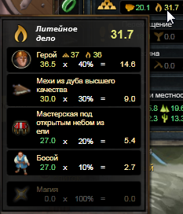

Мастерская под открытым небом - это простейшая мастерская, позволяющая крафтить на своём участке. Рекомендуется её строить всем начинающим игрокам, так как за небольшие деньги можно получить серьёзный бонус к профессии на начальном этапе игры.
Мастерская под открытым небом - это простейшая мастерская, позволяющая крафтить на своём участке. Рекомендуется её строить всем начинающим игрокам, так как за небольшие деньги можно получить серьёзный бонус к профессии на начальном этапе игры.
Бонусы не зависят от типа местности, на котором построена, а так же требует всего лишь 300 места на участке. Рекомендуется строить на простой местности для того, чтобы использовать при постройке  рамы и
рамы и  кровлю от НПЦ-торговцев.
кровлю от НПЦ-торговцев.
Дешёвые материалы для постройки вы найдёте в городе Соколиния на Сборочной площадке.
 |
Постройка
| Рецепт | Требует места | Материалы | |
|---|---|---|---|
| Доступен всем с начала игры, изучать не требуется. | 300 | 2 × 1 × 1 × |
|